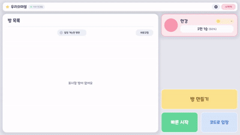
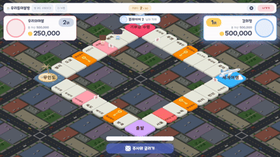
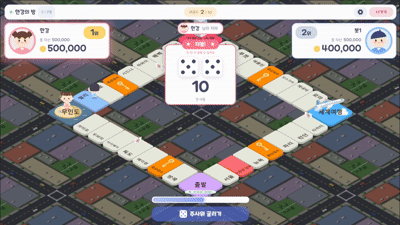
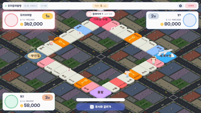

개요
"모두의 마블"을 모티브로 한 2~4인 실시간 온라인 보드게임입니다. 내일배움캠프 단기심화 9기 최종 프로젝트로, 5명이 4주(9/22 ~ 10/19) 동안 Unity 클라이언트와 Spring Boot 게임 서버를 만들었습니다. 서버는 AWS 로드 밸런서(ALB) 뒤에 EC2 여러 대로 배포했습니다.




기획 의도
누구나 아는 규칙의 게임을 골라 기획보다 온라인 게임 서버의 핵심 과제에 집중했습니다.
- 공정한 게임: 주사위와 판정 검증을 서버가 맡는 서버 권위 구조
- 멈추지 않는 게임: 자리를 비우거나 끊겨도 서버가 대신 진행하고, 재접속하면 복구
- 늘릴 수 있는 서버: 서버를 여러 대로 늘려도 같은 게임이 이어지는 구조
내 역할
경제·부동산 로직과 서버의 게임 진행, 봇, 타이머를 맡았습니다.
- 경제·부동산: 구매, 건설, 통행료, 인수, 매각, 파산 등 부동산·경제 기능 9개를 서버에 완성하고, 현금, 소유자, 진행 단계를 서버가 검증하게 했습니다.
- 제한 시간과 AFK: 입력 제한 시간이 지나면 서버가 대신 진행하고, 시간을 넘긴 사람은 AFK로 판정해 다음 차례부터 짧게 대신 진행합니다.
- 봇: 클라이언트에서 만든 봇 판단을 서버로 옮겼습니다. 봇은 사람과 같은 규칙, 같은 서비스 함수로 진행하고, 다음 턴 통행료 위험, 투자 회수 기간, 더 좋은 땅을 놓칠 기회비용을 따져 구매·건설·인수를 판단합니다.
- 설정 통일: 초기 자금, 월급, 라운드 같은 값이 클라이언트와 서버에 따로 있던 것을 서버 config 기준으로 통일했습니다.
- 재접속과 문서: 재접속한 사람에게 현재 게임 상태(
GAME_STATE_SYNC)를 보내고, springdoc과 Redoc으로 REST와 WebSocket 메시지 문서를 정리했습니다.
구성도
사용 기술
| 서버 | Java 21, Spring Boot 4.1, Spring WebSocket (STOMP 없이 직접 구현), Spring Security + JWT, Spring Data JPA |
| 데이터 | Redis 7.4 (상태, 접속 기록, 타이머, Pub/Sub, 분산 락), MySQL 8.4 (회원, 전적) |
| 인프라 | AWS EC2, AWS ALB, GitHub Actions (CI/CD), Docker Compose |
| 테스트 | JUnit 5, AssertJ, Mockito, 부하 테스트 |
| 클라이언트 | Unity 6, C#, NativeWebSocket, DOTween |
성과
- 동시 접속 1000명 부하 테스트에서 p95 응답 시간을 초 단위에서 수십 ms로 줄였습니다. (아래 트러블슈팅)
- 서버 2대 시나리오 테스트 11개를 모두 통과했습니다.
- 사람이 자리를 비우거나 서버 한 대가 죽어도 게임이 끝까지 이어집니다.
- 팀은 서버를 EC2에 배포하고 클라이언트를 itch.io에 올려, 브라우저에서 바로 플레이할 수 있게 했습니다.
트러블슈팅
1. AFK 타이머를 Redis로 옮기기
문제: 제한 시간이 지나면 서버가 대신 진행하는 타이머를 서버 메모리에서 관리했습니다. 서버를 여러 대로 늘리자, 타이머를 가진 서버가 죽으면 타이머도 함께 사라져 게임이 멈췄습니다.
원인: 타이머가 한 서버의 메모리에만 있었고, 여러 서버가 같은 마감을 동시에 확인하면 대신 진행이 두 번 일어날 수 있었으며, 처리 도중 서버가 죽는 경우도 대비가 없었습니다.
해결
- 방별 마감 시간을 Redis Sorted Set에 기록해 모든 서버가 공유합니다.
- 마감 확인과 연장을 Lua 스크립트 하나로 묶어 한 서버만 처리하게 했습니다.
- 처리하던 서버가 죽을 때를 대비해 마감을 지우지 않고 10초 연장합니다.
- 게임 상태 저장과 다음 마감 기록도 Lua로 한 번에 처리해 순서를 보장합니다.
결과: 타이머가 특정 서버에 묶이지 않아, 서버 한 대가 죽어도 다른 서버가 이어받아 게임이 멈추지 않습니다. 여러 서버가 동시에 확인해도 한 방의 대신 진행은 한 번만 실행됩니다.
2. 부하 테스트 병목 개선
문제: 동시 접속을 100 → 200 → 500 → 1000명으로 늘리자 응답이 급격히 느려졌습니다. 1000명일 때 p95는 로그인 3.89초, 채팅 2.68초, 방 목록 2.52초였습니다.
원인: 스레드 176개가 로비 서비스 전체에 걸린 synchronized를 기다리고 있었습니다. 같은 방의 요청이 겹치지 않게 하는 일은 이미 방 단위 분산 락이 하고 있어서, 이 synchronized는 다른 방의 요청까지 막는 불필요한 대기였습니다. 락 대기를 없앤 뒤에도 1000명이 로그인하는 첫 1분에 지연이 몰리는 것을 확인했습니다.
해결
- 로비 서비스의 전역
synchronized를 제거하고, 방에 들어올 때 하던 닉네임 DB 조회를 방 락을 잡기 전으로 옮겼습니다. - 메시지마다 남기던 로그를 INFO에서 DEBUG로 낮춰 로그 양을 91~96% 줄였습니다.
- ALB와 EC2 수평 확장으로 서버를 2대로 늘렸습니다.
결과 (동시 접속 1000명, p95)
| 지표 | 개선 전 | 최종 (서버 2대) |
| 로그인 | 3.89s | 153ms |
| 채팅 | 2.68s | 11ms |
| 방 목록 | 2.52s | 15ms |
| 락 대기 스레드 | 176 | 0 |